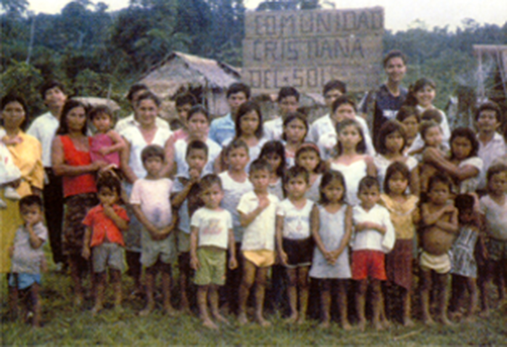
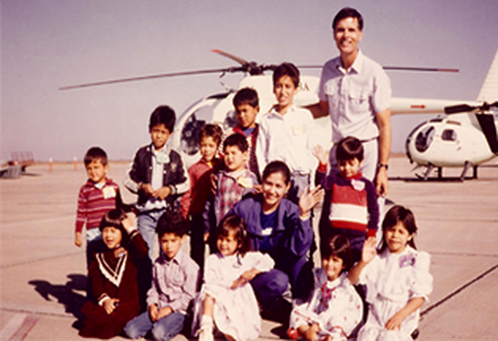
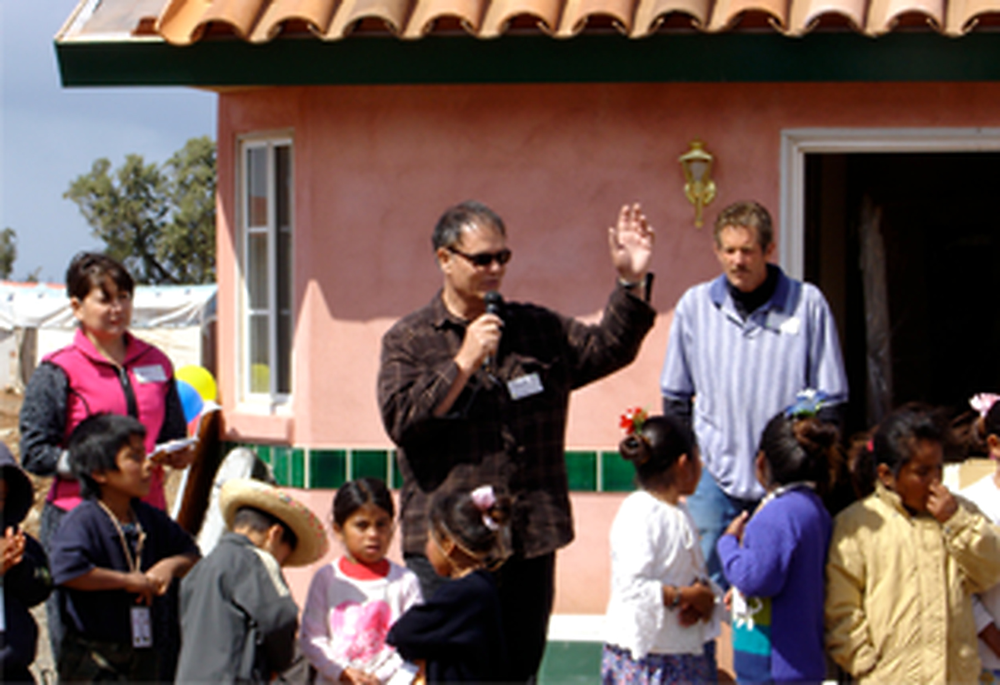
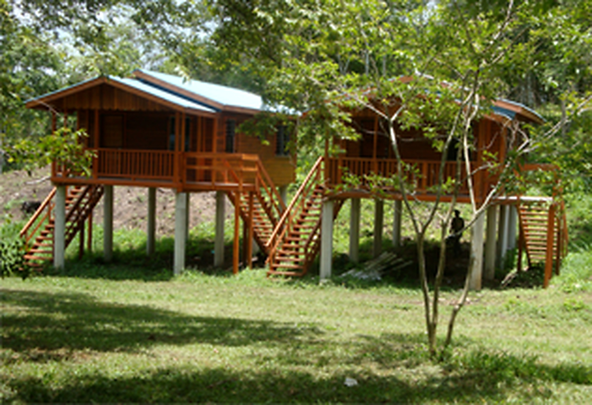
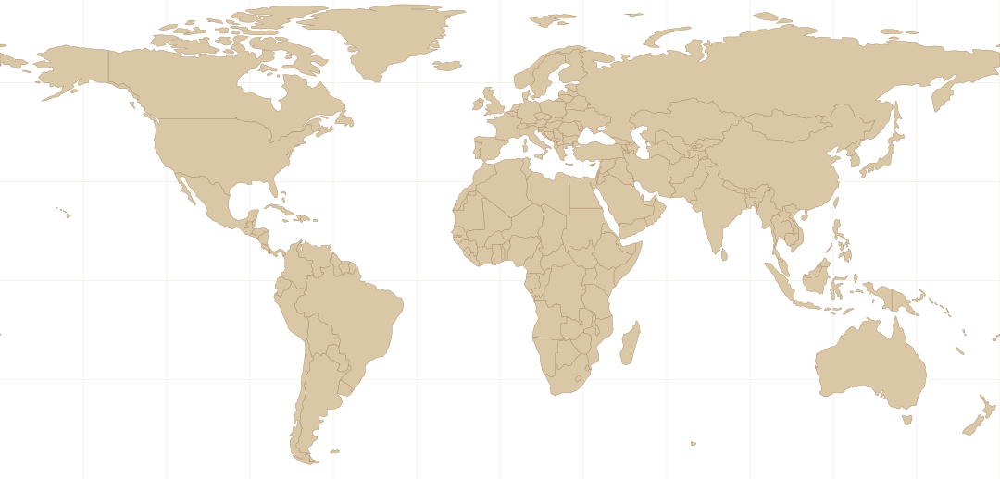

Love
We show the love of Jesus to every child.
GOING IN HIS NAME
WHAT WE DO
We show the love of Jesus to every child.
We teach children to know, love and serve Jesus.
We go to the nations in obedience to His command.
We help transform lives and build brighter futures.
OUR MISSION
Two-thirds of God’s name is GO, and every commanding moment in history is connected to the word GO. God’s only Son was a missionary. He left a secure, heavenly home to GO to another world and culture to share the Good News with us.
The word GO was so vital that Jesus himself came back from the grave to remind us to “GO into all the world and share the Gospel. GO teach all nations.” For more than 40 years, in literal obedience to His command, we have gone with one goal in mind.
Our relentless aim is to love and teach children to know, love and serve Jesus.
LEADERSHIP
Meet the dedicated people who faithfully serve alongside Sparrows Gate Mission. With compassion, prayer, and practical support, they help share the love of Jesus with children and families in the communities we serve.
Words from Dean and Alba. Our goal at Sparrows Gate Mission is that homeless children and single, destitute moms and their children in Mexico, Belize, the Amazon and the Philippines will come to know, love and serve Jesus.
Chris Davis is Executive Administrator of Sparrows Gate. Words from Chris Davis. “For many years now I have been bringing youth groups from Salem, Oregon, to serve poor children in Baja.”
Words from Bobbi Lucas. “My husband and I met Dean and Alba almost 40 years ago at a church in San Diego.”
Maria’s previous ministry experience includes a lifetime of service in outreach and discipleship. Words from Maria Montes. “I’m honored to have accepted a position as a board member of Sparrows Gate.”
Lee’s walk with the Lord began in 1971. Words from Lee Wadell. “I have been involved with Sparrow’s Gate ministries since the late 1980s.”
Keith began a relationship with Jesus in July 1973. Words from Keith Cowell. “It has been a pleasure and a learning experience to watch God at work in Dean and Alba over the years.”
OUR HISTORY
1986 — Today
THE STORY
In his teens, Dean Tinney felt God’s leading to share the Gospel with the poor, but he left the Church and fellowship with Christ for a business career. For many years, he was a driven corporate executive, entrepreneur and part-time professor of marketing at Cal State University, Fullerton.
MISSION MILESTONES
From a small children’s outreach in Tijuana to missions across Latin America and Asia.
PHOTO ARCHIVE





STATEMENT OF FAITH
This area is designed for the mission’s official statement of faith. The image keeps the section warm, clear and easy to read.
WHERE WE SERVE
Select a location on the map to explore a dedicated story area with photos and mission details.


Oaxacan Indian families are hauled about 1,800 miles from Oaxaca to Ensenada, non-stop, standing up in a flatbed truck to work in the fields for a few months. They labor from dawn to dusk for $10 per day in blazing heat or freezing cold to grow and harvest mostly beans, tomatoes, cucumbers, onions and flowers for seeds and for dry floral arrangements for export.
TRAINING
OPPORTUNITIES TO SERVE
Two-weeks of classroom and field training take place in the very beautiful country of Belize, Central America. Lodging and food is provided. Then participants who are willing can continue to gain hands-on mission experience serving children at Kids’ Corner in San Ignacio, Belize. Another possibility for your extended mission training practicum abroad may be to serve at our Oaxacan Indian children’s school in Ensenada, Mexico or helping out at our daycare center or at our home for street kids in Davao, Philippines. Your leader will decide if one of these three additional locations are options depending on your talents, interests and the kind of volunteer help needed at the time in Belize, Mexico and the Philippines. After this initial time of training you may apply for an extended term of service with Sparrows Gate Mission or other missions of your choice. We can also recommend several mission organizations worldwide who are in need of volunteers.
EXPLORE THE BIBLE
Choose a book and chapter, then open it in a trusted online Bible reader. The reader opens in a new tab so visitors can continue exploring without leaving the mission site.
CONTACT